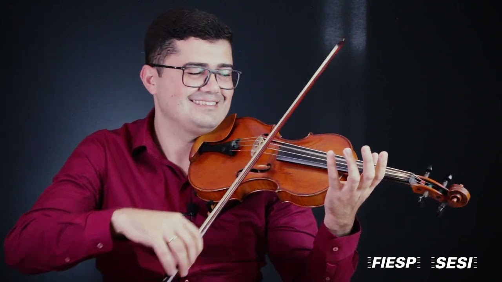
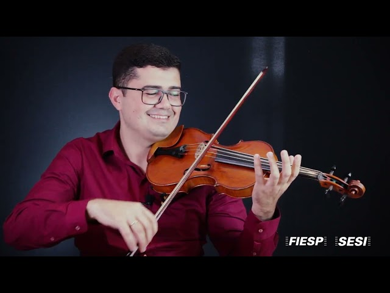

Solista
Mozart K. 216, Serenata Op. 48 de Tchaikovsky, Vivaldi e Piazzolla. Solista convidado nos concertos Sinos Encantados e Poemas Sonoros.

Solista, spalla da Camerata Fukuda e professor no Baccarelli, na EMESP e na Santa Marcelina. Do palco erudito à sala de aula, técnica com expressividade.
Solista A da Sinfônica Municipal, Wellington Rebouças transita entre o palco e a sala de aula. Concertino dos primeiros e segundos violinos e chefe de naipe dos segundos violinos, spalla da Camerata Fukuda e da Acadêmica do Mozarteum, professor no Baccarelli e professor convidado na EMESP. Aluno de Elisa Fukuda, com aperfeiçoamento na Alemanha.
Mozart K. 216, Serenata Op. 48 de Tchaikovsky, Vivaldi e Piazzolla. Solista convidado nos concertos Sinos Encantados e Poemas Sonoros.
Solista A da Orquestra Sinfônica Municipal, concertino dos primeiros e segundos violinos e chefe de naipe dos segundos violinos, no Theatro Municipal de São Paulo.
Spalla da Camerata Fukuda e da Orquestra Acadêmica do Mozarteum Brasileiro, com concertos de câmara e repertório brasileiro.
Recitais com piano, como o recital Bartók com Jordan Alexander, e música de câmara em teatros e igrejas.
Masterclass de violino na Orquestra Suzanense, no Festival Sinos de Santa Ifigênia e no Curso Master 2026, no Teatro Temec.
Professor no Instituto Baccarelli, professor convidado na EMESP Tom Jobim e na FASM e no Instituto Luzes da Ribalta, pelo projeto Orquestrando Brasil.
Postura, arco, primeiras notas e leitura. Base limpa desde a primeira aula, com repertório acessível.
Técnica, escalas, vibrato e concertos. Preparação para vestibulares, para a EMESP e para jovens orquestras.
Performance, interpretação e rotina profissional. Do Mozart ao Tchaikovsky com som próprio.

"Técnica sem expressividade é só ginástica. O estudo precisa virar canto."
Ver aula no YouTube

Masterclass de violino na Orquestra Suzanense, das 8h30 às 12h. Inscrições até 17/09.
Com a Orquestra L'Estro Armonico, no Teatro Bor. No programa: Bach, Grieg e Händel. Solista convidado, às 11h.
Recital de professores e concerto com a Jovem Master. No Teatro Temec, com entrada gratuita.
Contratos, aulas e parcerias. O atendimento é pelo WhatsApp e pelo Instagram, com resposta em horário comercial.
Solista, spalla e professor.
Para orçamento, envie data, cidade e tipo de evento.
Atendimento no WhatsApp (11) 96418-3668, em horário comercial.
Solista A da Sinfônica Municipal, no Theatro Municipal de São Paulo, na função de concertino e na chefia de naipe, além de spalla da Camerata Fukuda e convites como solista.
No Instituto Baccarelli, na Faculdade Santa Marcelina, como convidado na EMESP Tom Jobim e no Instituto Luzes da Ribalta, pelo projeto Orquestrando Brasil.
Não para a primeira conversa. Na aula experimental, avaliamos e indicamos o instrumento certo para o seu bolso e o seu objetivo.
Sim, com boa câmera e material de apoio, além da série Técnica e Expressividade no YouTube como reforço.